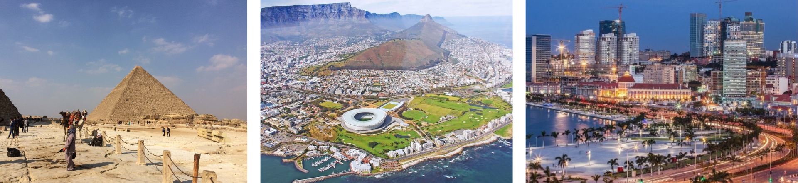
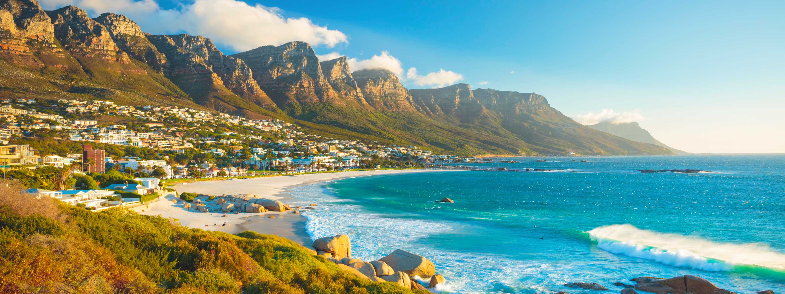

SAIBA MAIS
Saiba mais sobre o continente africano
Localização e limites geográficos
A África é um continente com, aproximadamente, 30,27 milhões de quilômetros quadrados de terras. Estas se localizam parte no hemisfério norte e parte no sul. Ao norte é banhado pelo mar Mediterrâneo; ao leste pelas águas do Oceano Índico e a oeste pelo Oceano Atlântico. O Sul do continente africano é banhado pelo encontro das águas destes dois oceanos.

Dados gerais e características do Continente Africano:
- É um continente basicamente agrário, pois cerca de 62% da população habitam o meio rural, enquanto somente 36% moram em cidades (dado de 2022).
- No geral, é um continente pobre e subdesenvolvido, apresentando baixos índices de desenvolvimento econômico. A renda per capita (PIB per capita), por exemplo, é de, aproximadamente, US$ 960,00. O PIB (Produto Interno Bruto - dado de 2022) corresponde a apenas 1% do PIB mundial. Grande parte dos países possui parques industriais pouco desenvolvidos, enquanto outros nem se quer são industrializados, vivendo basicamente da agricultura.
- O principal bloco econômico africano é o SADC (Southern Africa Development Community), formado por 15 países: África do Sul, Angola, Botswana, República Democrática do Congo, Lesoto, Madagascar, Malaui, Maurício, Moçambique, Namíbia, Suazilândia, Seychelles, Tanzânia, Zâmbia e Zimbábue.
- Além da agricultura, destaca-se a exploração de recursos minerais como, por exemplo, ouro e diamante. Esta exploração gera pouca renda para os países, pois é feita por empresas multinacionais estrangeiras, principalmente da Europa.
- Os países africanos que possuem um nível de desenvolvimento um pouco melhor do que a média do continente são: África do Sul, Egito, Marrocos, Argélia, Tunísia e Líbia.
- Os principais problemas africanos são: fome, epidemias (a AIDS é a principal) e os conflitos étnicos armados (alguns países vivem em processo de guerra civil).
- Os índices sociais africanos também não são bons. O analfabetismo, por exemplo, é de aproximadamente 40%.
- As religiões mais presentes no continente são: muçulmana (cerca de 40%) e católica romana (15%). Existem também seguidores de diversos cultos africanos.
- As línguas mais faladas no continente são: inglês, francês, árabe, português e as línguas africanas.
- A África possui uma fauna rica e diversificada. Os principais animais que vivem neste continente são: elefante africano, leão, zebra, rinoceronte, hipopótamo, leopardo, hiena, gorila, chacal, chipanzé, girafa e avestruz.
